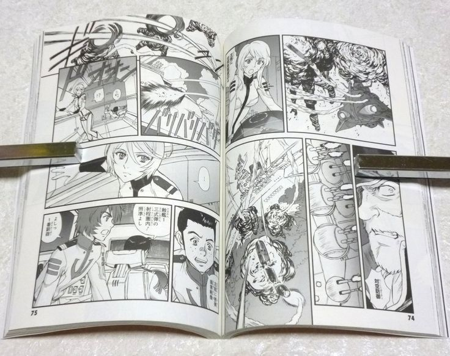

Publicado Por Matheus Damascena,Dia 18/09/2015.

Mangá é o nome dado às histórias em quadrinhos de origem japonesa. A palavra surgiu da junção de outros dois vocábulos: man, que significa involuntário, e gá, imagem. Os mangás se diferenciam dos quadrinhos ocidentais não só pela sua origem, mas principalmente por se utilizar de uma representação gráfica completamente própria. Pra começar, o alfabeto japonês se compõe de ideogramas que não só representam sons, mas também idéias. Assim, em um mangá o texto em geral, mas principalmente as onomatopéias, fazem parte da arte. A ordem de leitura dos mangás também é diferente daquela que estamos acostumados. Um livro japonês começa pelo que seria o fim de uma publicação ocidental. Além disso, o texto é disposto da direita para a esquerda (clique aqui para ver a forma correta de se ler um mangá). Outra característica peculiar dos mangás é que eles são publicados em volumes de mais ou menos 200 páginas cada, o que permite aos autores criar histórias mais longas e aprofundadas. Dessa forma, em um mangá é comum ver várias páginas só de imagens, sem diálogos, e também ações que se desenrolam por muitos quadrinhos e abordadas por diferentes pontos de vista. A disposição dos quadrinhos em uma página de mangá é diferente daquela que se costuma ver num comic americano, que costuma ter 3 ou 4 fileiras de quadrinhos por páginas. Como os mangakás (nome dado aos autores de mangás) dispõe de um espaço maior para contar sua históra, também empregam um número menor de quadrinhos por página – não é difícil ver página até sem quadrinhos, com uma única imagem estourada. Também é característica dos mangás serem feitos completamente em preto-e-branco e em papel jornal, o que torna o produto mais barato e faz com que ele seja consumido por todo tipo de pessoa – no Japão eles são lidos por crianças, estudantes, executivos, donas-de-casa… Esses são apenas alguns pontos que caracterizam os mangás. Só que o principal é a capacidade que eles têm de encantar pessoas do mundo todo. Ler um mangá é uma experiência única. É mergulhar em um mundo próprio. Cheio de ação, emoção, heróis, criaturas mágicas e muita, muita diversão.